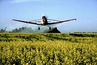

Crop Protection
Agriculture today is intensive or high-yield, resulting from advancements in agricultural research, new technology and applied science. High-yield agriculture really means being able to grow more bushels of grain from the same, or even less, amount of land. High-yield agriculture has fed many, many more people in the world -- and on the same agricultural land that has been farmed for centuries.
Crop yields have been increased due to a number of factors. New approaches to crop production and technological advances contribute to the success of farming today. Included here are: new types and varieties of crops, different farming practices, improved and new equipment and the use of synthetic fertilizers and crop protection products. The development and use of synthetic and natural pesticides (crop protection products) is one of the most important parts of high-yield agriculture.
Crop Protection Products and Their Use
Pesticides are used to control insects, diseases, weeds, fungi and other pests in crops, food, fruit, vegetables, animals and buildings. Fungicides, herbicides, insecticides, rodenticides, sanitizers and soil fumigants are specific kinds of pesticides.
Pesticides may be natural, or synthetic. Natural pesticides are produced by plants and animals themselves, while synthetic chemicals began to be manufactured in the 1950's. Most synthetic and all natural pesticides are organic, meaning they contain the carbon molecule. Inorganic pesticides do not contain carbon.
Synthetic chemicals used on crops have been developed over many years and tested to ensure safety of their use. Without the products, farmers around the world would have to break new land at a significant cost to natural resources and wildlife habitats. Even now, pests destroy approximately 35% of the world's crops and food supply. Whether natural or synthetic, if used properly, pesticides are a safe way to produce high-yield agriculture (natural pesticides occur in plants and animals and are just as potent, if not more, than synthetic chemicals).
The use of these pesticides depends upon the farming practice. While the practice of a monoculture (growing a single crop) has increased food supplies it also has encouraged many pest populations to grow out of control. Sometimes, intensive pesticide use has been necessary to save crops from destruction. In the process, many natural predators and beneficial insects have been destroyed at the same time as the pests and many genetically-resistant pest species have developed. Since the 1980's, farmers concerned about the over-reliance on chemicals have turned to Integrated Pest Management. These practices include a combination of crop rotation, tillage, the use of crop protection products and monitoring of insect infestation levels to determine if action is needed, the use of insect predators and the development of pest and disease resistant crops.
Integrated Pest Management also involves many agronomic practices that make crops more competitive against weeds and other pests.
These practices include
- using different methods of seeding
- using clean seed
- the use of more winter annuals, which
get off to a faster start in the spring (to suppress weeds) and
can also be harvested earlier (before weeds scatter seeds)
- cultivation and mowing to control weeds along field borders
- enhancing soil fertility
- and the spacing of crop rows.
The goal of Integrated Pest Management is to decrease the amount and use of crop protection products as much as possible. When crop protection products are used, herbicides may be applied to plants directly by post-emergent spraying, or by pre-emergent applications which are incorporated into soils. Certain herbicides (containing the ingredient glyphosate)
are non-selective and kill all plant groups, but the chemical
breaks down quickly so that it will not be present to damage the
next crop. An application of one herbicide at one time may not control
all the weeds for an entire year. Weed seeds can germinate at
different times and some weeds may be resistant to a particular herbicide.
Pests such as plant diseases and insects are common threats to field crop production. Pesticides and natural controls are used to limit crop damage. Other pest organisms include nematodes (round worms),
worms, mites, pocket gophers and certain birds. Unlike weeds, which
pose a consistent threat from year to year, the other kinds of
pests are usually sensitive to weather and their own natural controls,
which include diseases and parasites. Therefore, their numbers
and potential damaging effects are not as easy to predict and
not as easy to monitor. Departments of agriculture carry out surveys
and make forecasts of potential trouble areas.
Disease Crop diseases may be carried from plant to plant or remain
in soil, straw, seeds, buildings or implements (seeders) to infect
new crops. Bacteria, viruses and fungi can cause damage by feeding
on (breaking down) cells in seeds or vegetative parts of plants
such as roots, stems and leaves. These parasitic actions can kill plant parts, reducing the overall plant performance, or they
can kill the entire plant.
Control or prevention involves a combination of the cultural and chemical methods.
- The use of seeds
which are not carrying any diseasecausing organisms either
inside or on their surfaces is the best defense against the spread of disease. Certified seed from commercial seed
growers reduces this possibility. Other types of seeds may be chemically treated using systemic fungicides (enter the seeds and kill any possible diseases carried internally); protective fungicides (remain on the seed surfaces); dual purpose treatment (combination of a fungicide and an insecticide). Canola, for example, can have a coating to guard against fungi and against insects like flea beetles.
- Rotation of crops is important since minimum and zero tillage increases the chance of disease because of the practice of leaving straw on the surface, rather than burning or turning it under. Proper crop rotation allows a reasonable time interval before growing the same type of crop on a field.
- The use of plant varieties or types
which are resistant to plant diseases decreases the chance of disease destroying a crop.
- Another technique used to decrease the threat of disease is to use caution when working different fields with the same equipment. Disease may be transferred from field to field, through movements of straw or machinery. Cleaning machinery of straw, seeds and other matter before moving reduces such possibilities.
Insects
Insect control is similar to that of other pest controls. Crop rotations can stop the life cycle of certain insects. For example, some wheat varieties are resistant to the wheat stem
sawfly; canola, legumes and barley can be used where the wheat
midge is troublesome. Visual
inspections of fields and surrounding borders helps to determine if there is an infestation. Some seed varieties may be coated with insecticides prior to seeding. Contact poisons (for insects with sucking
mouth parts) or stomach poisons (for chewing insects) may be used for affected plants. Most insecticides are non-selective and are harmful to all organisms, including humans.
Biological controls are also used to help control pests (by using a another living organism). All microorganisms, plants and animals have natural enemies. These can include parasites, predators and diseases.
By using such natural enemies, other species are not usually harmed.
For example, ladybird beetles which
control aphids and other insects, a parasitic wasp which
attacks the wheat midge and the seedhead weevil
which destroys the seed-producing ability of scentless chamomile are natural, biological controls.
Detailed information
about specific insects, their life cycles and control measures
is available from the rural service centres. |